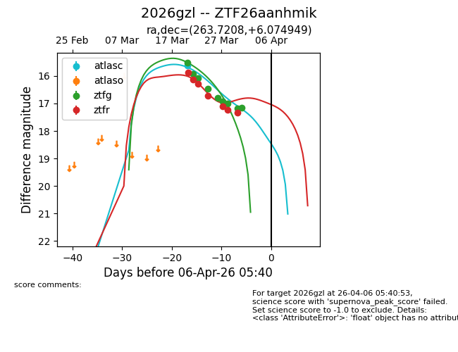
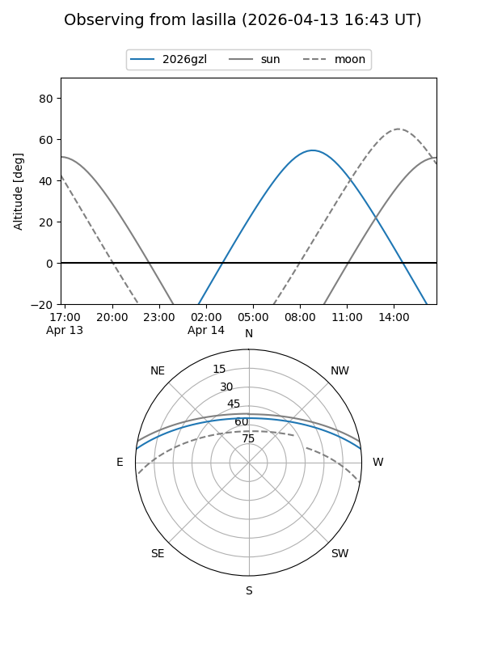
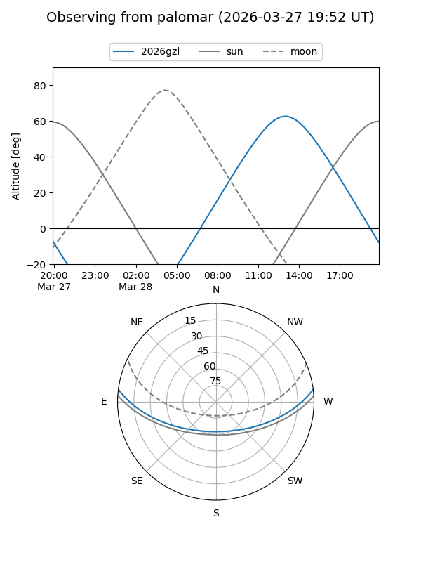
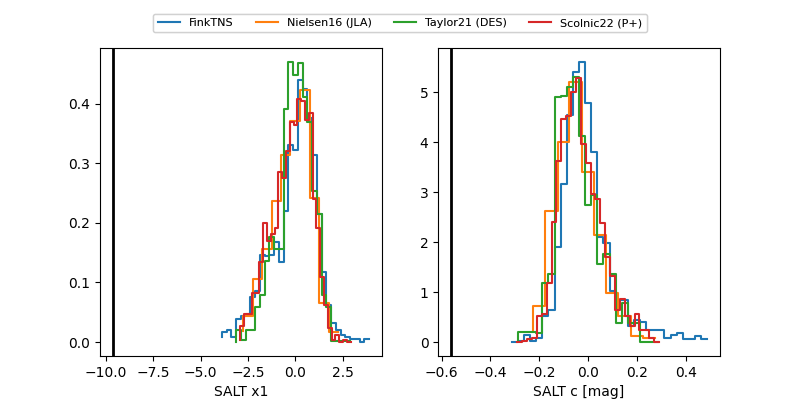

2026gzl
Target 2026gzl at 2026-04-06 05:44
Aliases and brokers:
FINK: link
Lasair: link
ALeRCE: link
TNS: link
YSE: link
alt names
ZTF26aanhmik (ztf,fink_ztf)
2026gzl (tns,yse)
Coordinates:
equatorial (ra, dec) = 263.7208,+6.07495
equatorial (HMS+DMS) = 17:34:53.00,+06:04:29.82
galactic (l, b) = (29.6135,+19.77972)
Flags:
Photometry:
last atlasc=15.62, ztfg=17.17, ztfr=17.34
1 atlasc, 9 ztfg, 7 ztfr detections
Lightcurve

Visibility


Additional plots
